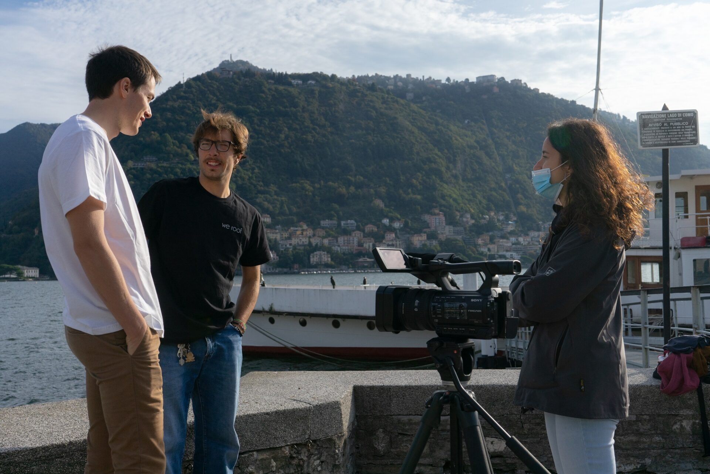
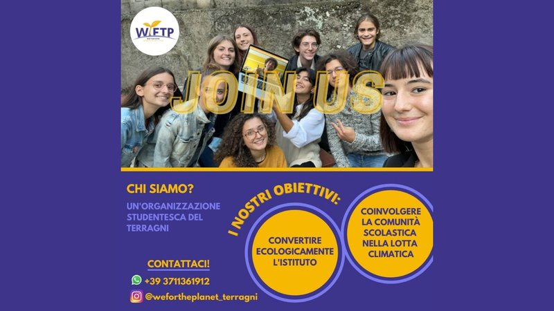
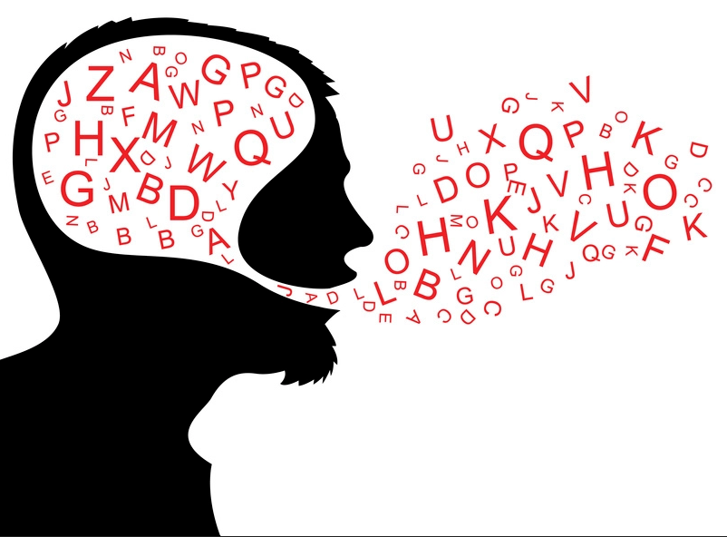
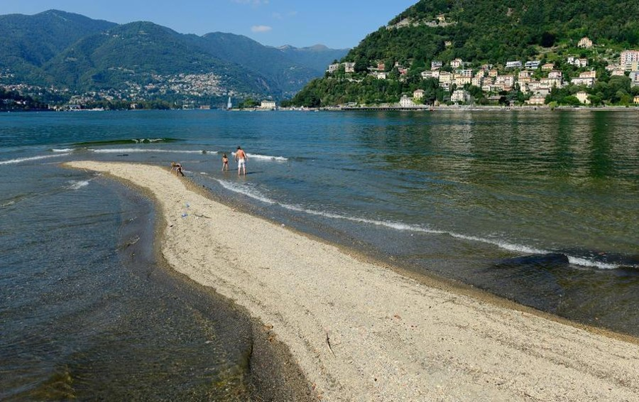

| We For The Planet |
|---|
| Nicola Castelnuovo (Proteus) |
|---|
| Riccardo Soriano (Fuori Fuoco) |
|---|
| Jhonny Dotti |
|---|
Nel terzo incontro sono intervenuti membri di diverse associazioni principalmente locali, con lo scopo di informare sulle loro attività a sostegno dell’ambiente, e Jhonny Dotti ha presentato un interessante discorso sulle parole
Nicola Castelnuovo della associazione Proteus, una associazione che si occupa di salvaguardia del lago soprattutto sotto la superficie, in quanto il fondale del lago è importante allo stesso modo di quello che c’è sopra ma la gente spesso se ne dimentica. Il riscaldamento globale sta creando dei seri problemi al lago: infatti se a fine inverno il lago non si è raffreddato e non è fresco, non vi è ricircolo di acqua e il lago marcisce. C’è infatti il rischio dell’eutrofizzazione, ovvero la troppa abbondanza di materiali nutrienti lacustri come i saponi: se aumentano i nutrienti aumenta il numero di alghe che decomponendosi producono O2, causando il marcimento del lago. Tutto ciò può essere risolto con dei sistemi di depurazione, che tuttavia sono troppo costosi per essere diffusi su tutto il lago. Si può utilizzare anche il colorante Rosso Nilo, che si lega alle plastiche quindi se viene buttato in acqua rivela dove sono presenti tracce di microplastiche. Anche il livello del lago è importante e da tenere da conto, in quanto ad esempio vi sono alcuni pesci che fanno le uova vicino alla superficie dell’acqua, e se il livello dell’acqua diventa troppo basso le uova muoiono. Se delle specie di pesci in questo modo si estinguono, è ovviamente un disastro per l’ecosistema: la rete trofica del lago è estremamente collegata e perdere una specie significa sbilanciare gli equilibri che regolano tutte le altre specie. Per questo Proteus sta avviando il progetto Re-Lake, per la salvaguardia del nostro lago
Fuori Fuoco è un collettivo di giornalisti tra i 19 e i 27 anni della provincia di Como principalmente, che lavora sul territorio comasco in senso giornalistico, producendo diversi lavori sul lago e sulla zona, ma anche organizzando eventi culturali e sociali, collaborando anche con altre organizzazioni cittadine. Riccardo Soriano ci ha spiegato il loro progetto e le attività che vengono organizzate dal collettivo
We For The Planet è una rete di diversi gruppi di ragazzi provenienti da varie scuole (Vi sono ad esempio We For The Planet Setificio, Volta o Terragni) che si organizzano per fare divulgazione su temi vicini alla salvaguardia ambientale. I gruppi organizzano attività nelle proprie scuole (es raccolta differenziata) e recentemente anche all’esterno come un concerto. Inoltre, il gruppo gestisce numerose pagine social dove vengono pubblicati contenuti a tema ambientale
Infine, Jhonny Dotti ha fatto un interessante discorso sulle parole e sul loro utilizzo, che al giorno d’oggi viene quasi abusato. La società moderna si basa sul fatto che le cose devono funzionare, non che abbiano un senso: è importante invece trovare e dare un senso alle cose. Senso di una cosa lo si può trovare nel suo significato, nella sua direzione e nella passione di ciò. Jhonny ha inoltre sottolineato l’importanza di trasgredire, perché solo trasgredendo e facendo esperienza possiamo accedere alla libertà di scegliere. Con la nostra libertà dobbiamo riuscire ad agire per trovare il senso della nostra vita, condividere, e provare compassione per gli altri. Dobbiamo realizzare i nostri desideri, perché non si mette al mondo qualcosa che non si desidera, quindi per raggiungere un qualsiasi obbiettivo, bisogna prima sognarlo.
L’ultimo incontro è stato diverso rispetto ai precedenti due, che erano più che altro divulgazioni su diversi temi, quasi delle lezioni. L’ultimo incontro invece è stata più una presentazione, una presentazione di diverse realtà locali che anche se diverse tra loro e con intenti diversi, lavorano “insieme” per un bene comune e per la salvaguardia dell’ambiente. È stato sicuramente molto interessante scoprire queste realtà locali che altrimenti difficilmente avrei scoperto. Mi è inoltre piaciuto particolarmente il discorso di Jhonny Dotti: ha espresso con molta ironia dei temi molto seri ed interessanti facendo riflettere
